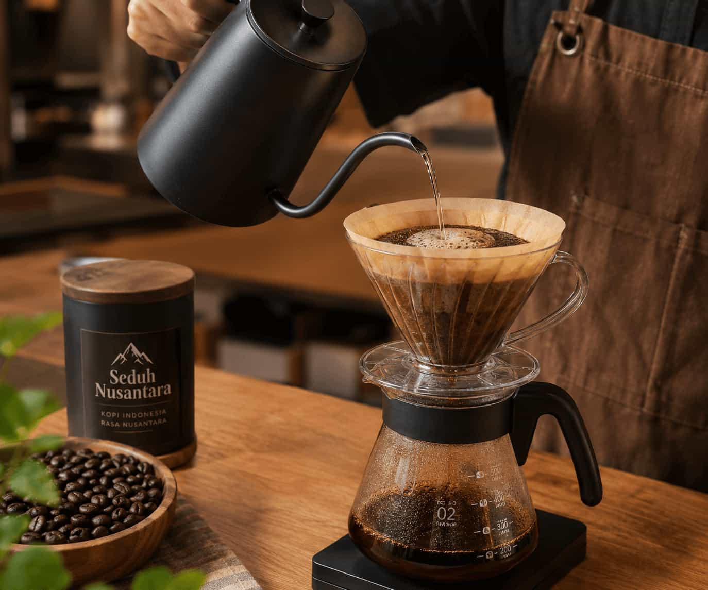

Galeri Seduh Nusantara
Selamat datang di galeri kami! Di sini Anda dapat melihat berbagai foto yang menampilkan produk kopi lokal kami, suasana kedai, dan momen-momen spesial yang kami abadikan.
Media Usaha


Audio
Musik santai bertema kedai kopi, menemani suasana Seduh Nusantara.